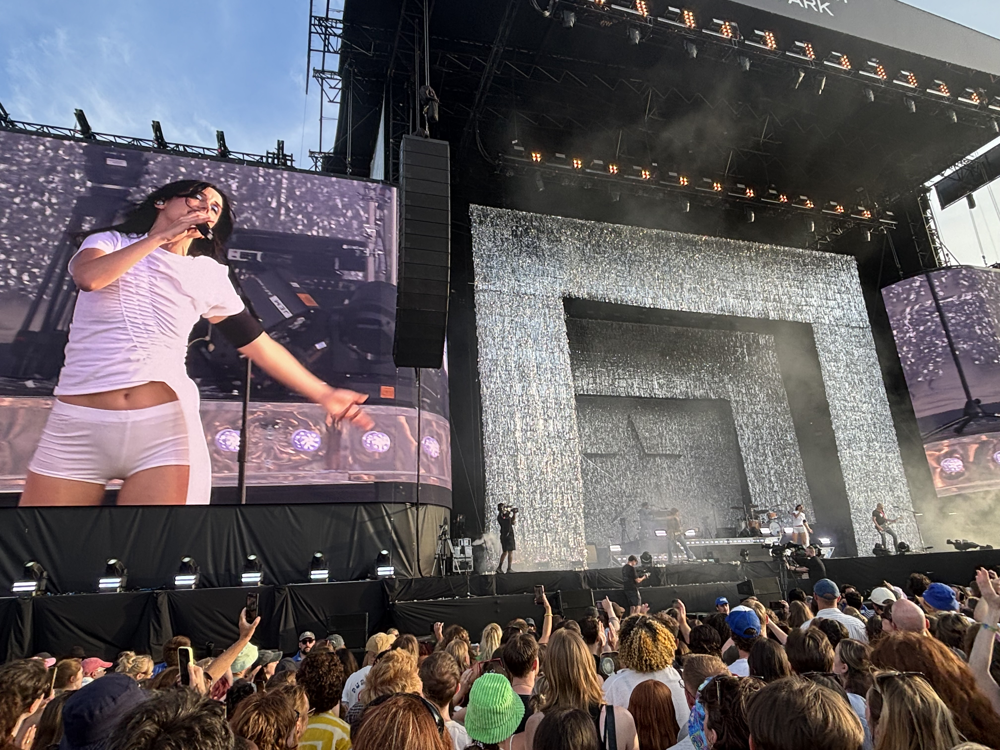

Science
Science
Genetics and disease, genomics, eQTLs, and GWAS.
Open science notesRB
Making the required researcher website fun for me

Science
Genetics and disease, genomics, eQTLs, and GWAS.
Open science notesFPL
Thoughts of a very average FPL player.
Open FPL notesMusic
Shows and album thoughts (can't play a single instrument).
Open music notesI feel incredibly privileged to be able to call genetics a career but nothing quite prepares you for a conference which is at the scale of ESHG (European Society of Human Genetics). Hundreds of scarily intelligent people across so many incredibly complex fields, terrifying. Anyway, was pretty fun, once you accept that anyone without a disorder will experience an extreme period of imposter syndrome
141,341k. A new season begins with everything else still blank.
Live show ranking: 8/10.